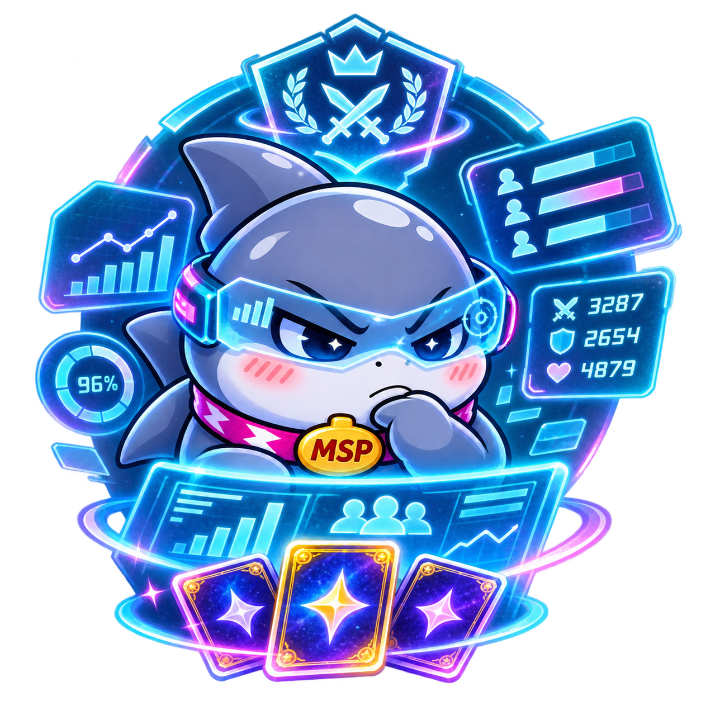
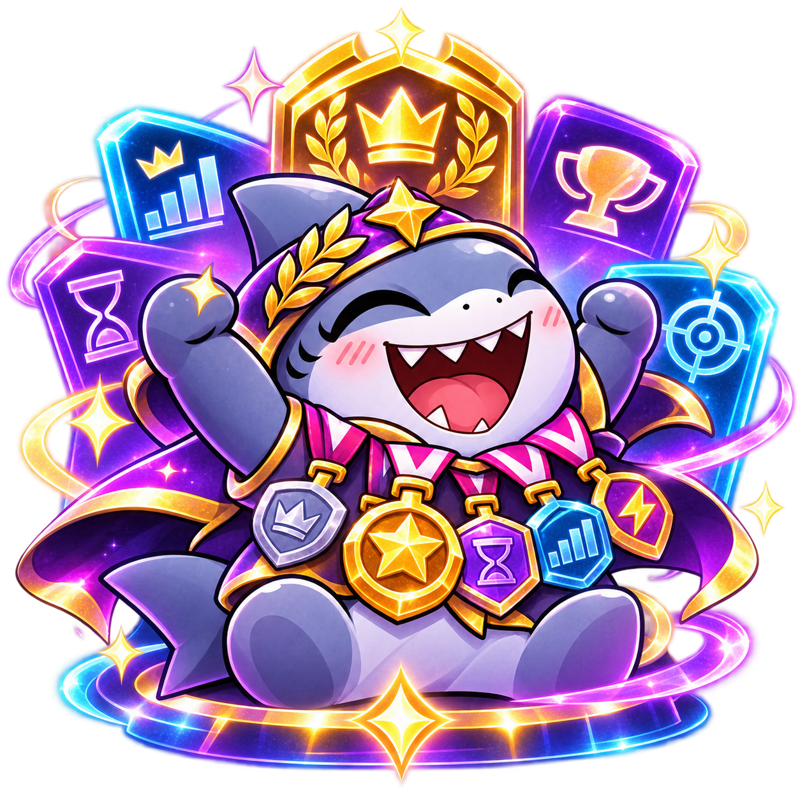
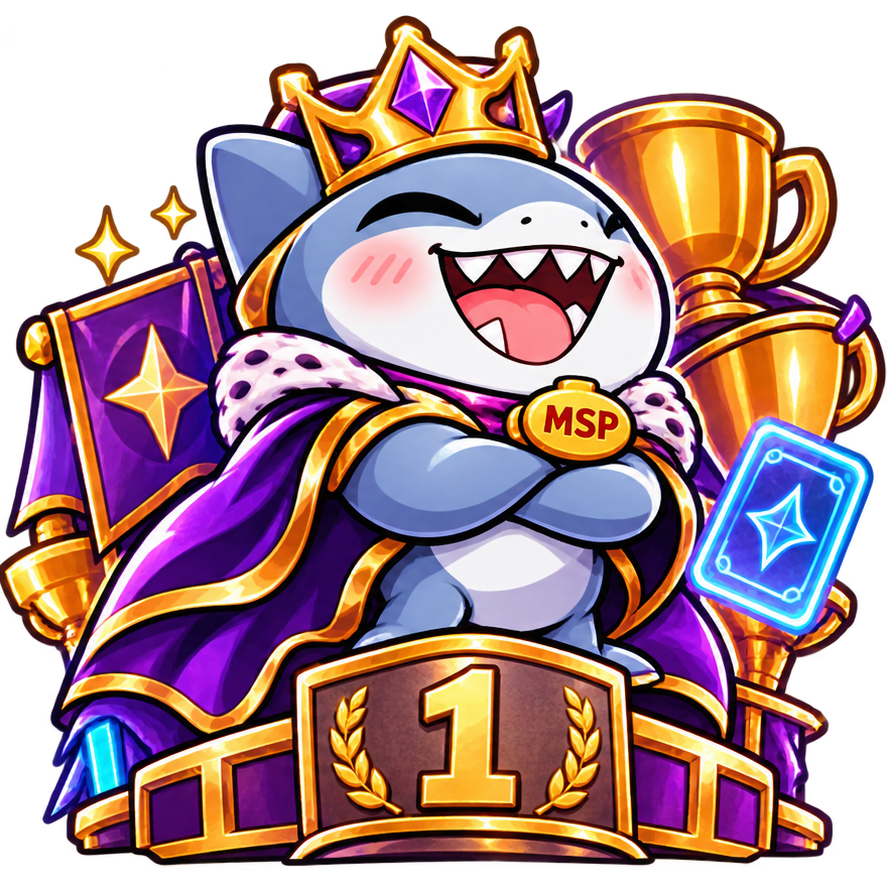
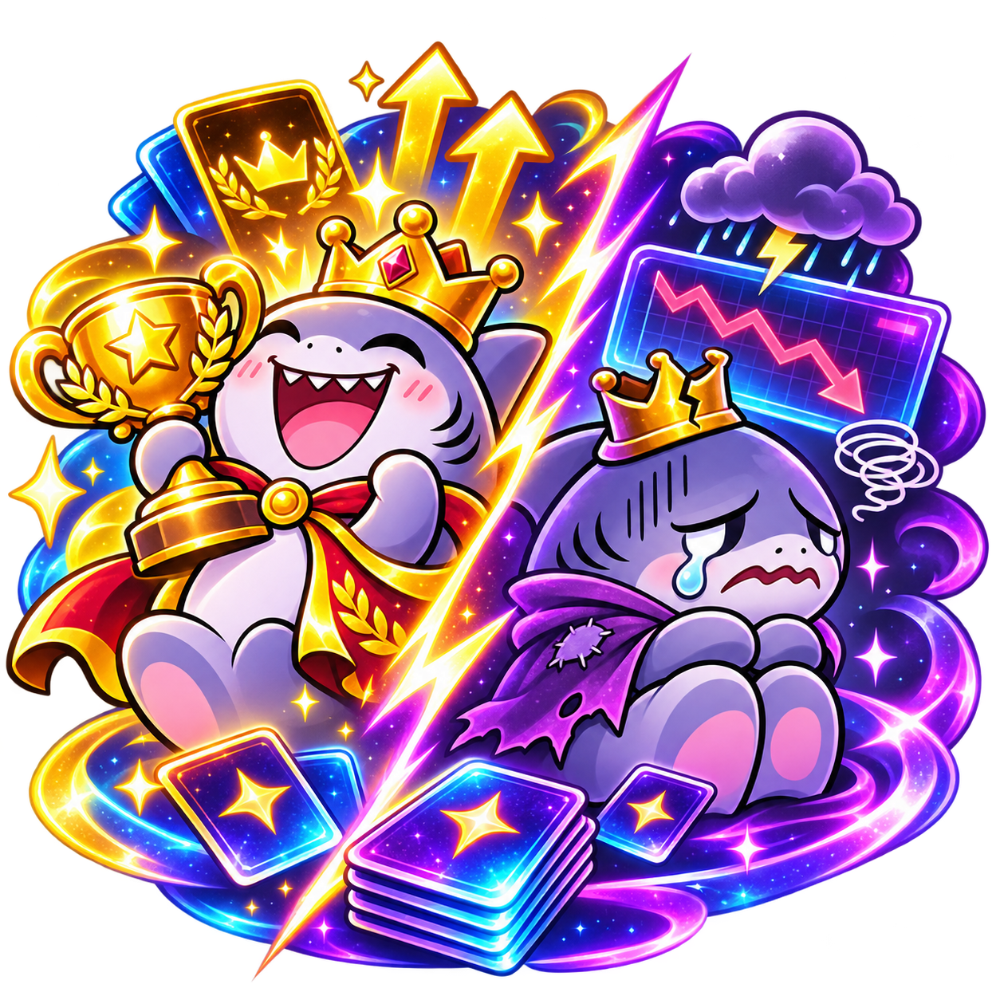
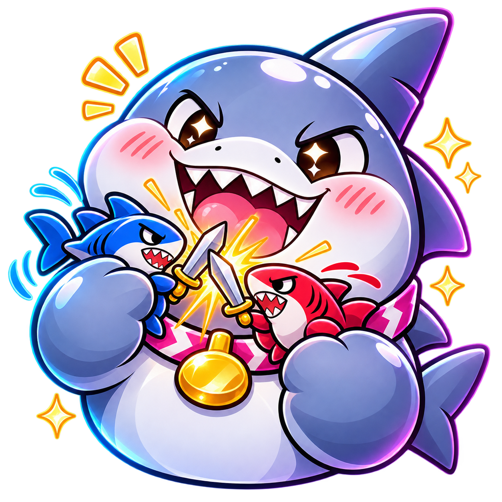
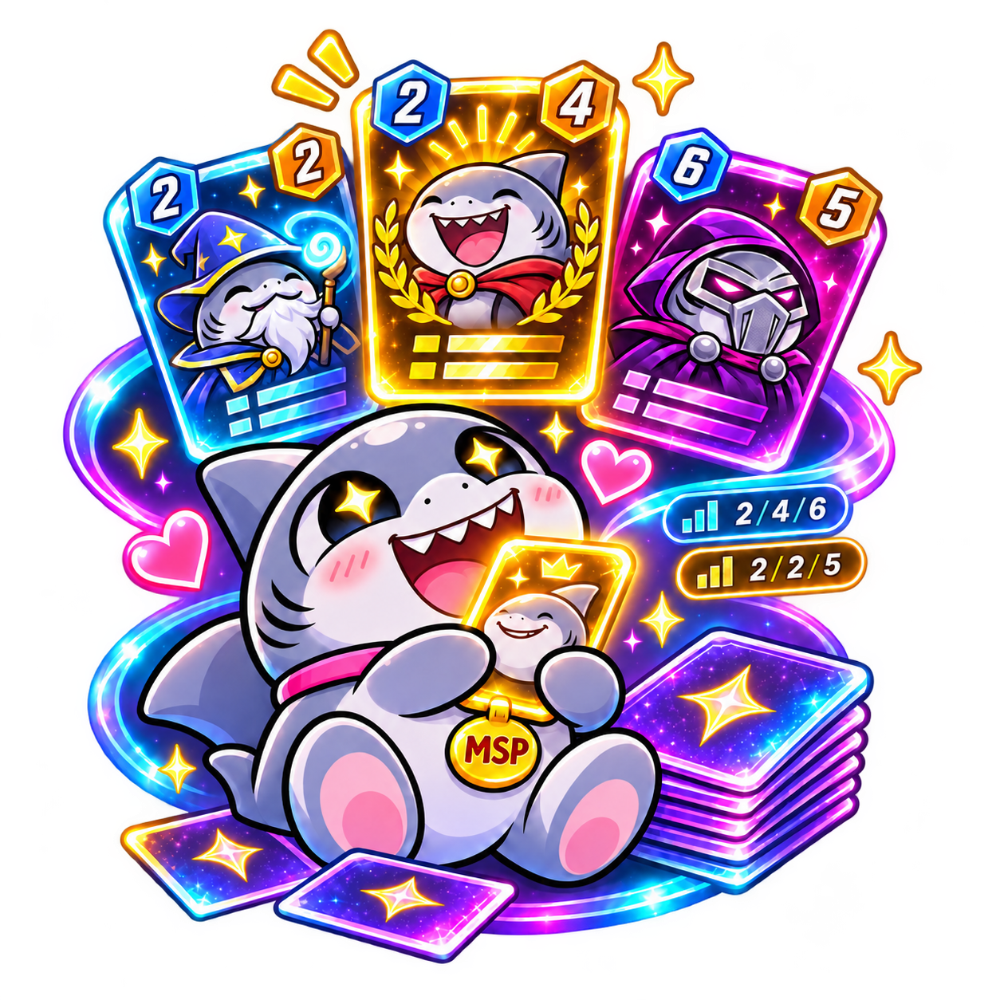
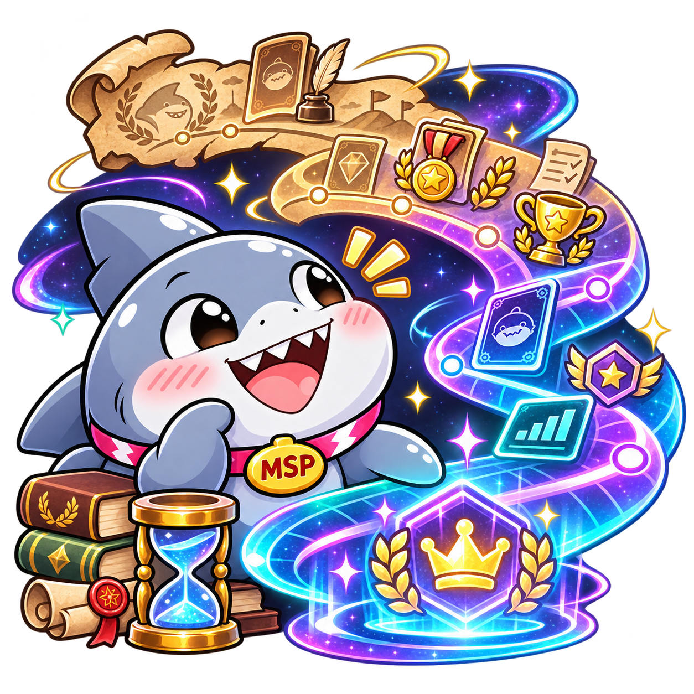

Punkty draftowe · wszystkie ukończone edycje
—
punktów draftowych łącznie
Szybka metryczka wojownika zbudowana wyłącznie z historii ukończonych draftów i realnie rozegranych meczów.
Najważniejsze liczby całej kariery. Win Rate liczy wyłącznie realnie rozegrane mecze, bez walkowerów.

Kumulatywny obraz całej kariery: skąd pochodzą punkty, jak kończą się realne bitwy oraz gdzie wojownik najczęściej ląduje w tabeli.
Punkty draftowe i końcowe miejsce w każdej kolejnej ukończonej edycji. Słupki pokazują punkty, linia — pozycję w tabeli.

Najmocniejsze pojedyncze występy i serie z historii kariery tego gracza.

Miejsce gracza we wszechświecie SnapDraftu. Weryfikacja na tle wszystkich weteranów walczących w lidze od zarania dziejów.
Najniższe wyniki, najtrudniejsze edycje i serie porażek — słabsze momenty pozostają częścią historii wojownika.

Trzy najmocniejsze i trzy najtrudniejsze występy zestawione obok siebie jako dwa skrajne końce tej samej historii wojownika.

Bezpośrednie starcia dwóch wojowników. Bilans i WR obejmują wyłącznie realnie rozegrane mecze.
Każdy realnie rozegrany matchup gracza — od najczęściej spotykanych przeciwników po najmniejsze próbki.
Karty, które najmocniej zaznaczyły się w historii gracza. Koszt i Siła pokazują ich aktualne parametry.

Statystyczna dwunastka złożona z kart najczęściej obecnych w deckach tego wojownika. Main Deck i Planetarna Rezerwa liczą się tu identycznie. To model kariery — nie realny deck z jednej edycji. Średni koszt i siła opisują wyłącznie finalne Main Decki.
Co najczęściej wybierasz, jakie synergie budujesz i co pomaga Ci wygrywać? Pełna synergia to co najmniej 4 karty z tym samym tagiem w jednej talii.
Jakie tagi najczęściej trafiają do Twoich talii? Każda wybrana karta liczy się osobno.
Twoje ukończone połączenia: co najmniej 4 karty jednego tagu w pojedynczej talii.
Synergie, które udało Ci się zbudować w zwycięskich draftach.
Twoje rekordowe talie: największe skupienie jednej mechaniki lub archetypu.
Zobacz, które pełne synergie budujesz częściej niż inni wojownicy SnapDraftu.
Deck i styl — mniej oczywiste wzorce w wyborach kart i konstrukcji talii wojownika.
Kroniki kariery — dodatkowe obserwacje z jego historycznych występów w draftach.
To ciekawostki wyliczone na podstawie danych archiwalnych. Nie przyznają dodatkowych punktów i nie zmieniają rankingów.
Odkryj mniej oczywiste wzory deckbuildingu i kariery — teraz w kolorowej, kosmicznej galerii faktów.
Każda ukończona edycja. Istniejące zdjęcia talii z archiwum są podpinane automatycznie.

Do sześciu najważniejszych odznaczeń: tytuły, podia i realne wyróżnienia względem stawki konkretnej edycji.